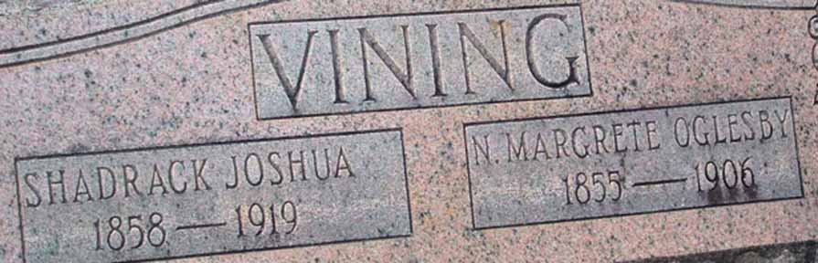

Marriage Data
Marriage license and certificate for Shadrack Joshua Vining and Nancy Margrete Oglesby:
Census Data
| 1890 | 1900 | 1910 | 1920 | 1930 | 1940 | |
| Shadrack Joshua Vining | ? | ? | 50 | ? | ? | ? |
| Nancy Margrete (Oglesby) Vining | ? | ? | dead | |||
| Roman Franklin Vining | ? | ? | living in separate household | |||
| Jonah Lafayette Vining | ? | ? | mrried and living in separate household | |||
| Samuel Jehue Vining | ? | ? | living in separate household | |||
| Sarah Retha Vining | ? | ? | living in separate household | |||
| James B. F. Vining | ? | 16 | ? | ? | ? |

Death Data
Headstone for Shadrack Joshua Vining and Nancy Margrete Oglesby, in Green Pond Presbyterian Church Cemetery, Green Pond, Bibb County, Alabama (from Find A Grave):